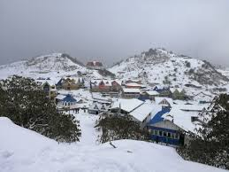
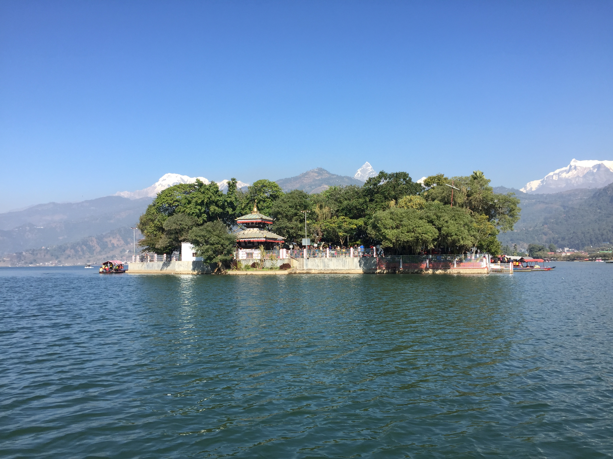
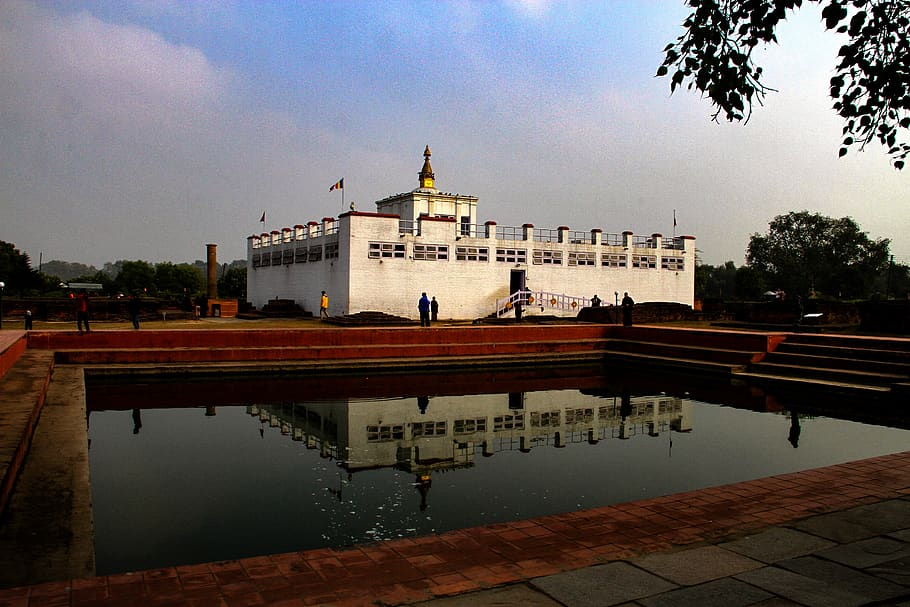

The act of travelling from one place to another place as well as one country to another country is called tourism. The main objectives of tourism are entertainment, mountaineering, trekking, business, etc. The people who travel are called tourists.
The business which provides different kinds of facilities to the tourists is called tourism industry. It comprises of business related to hotels, travel agencies, trekking agencies, etc.Tourists from the different corner of the world are attracted to visit Nepal because of its geographical diversity, unique culture and cultural heritage.
Nepal is a prime destination for tourist due to its natural beauty, unique culture and cultural heritage which provides additional attraction to tourists from the different corner of the world to visit Nepal.
This industry can play significant role in economic development of Nepal due to following reasons:
Generation of employment opportunities:
Nepal is suffering from serious problem of underemployment, disguised unemployment, seasonal unemployment, etc. Tourism industry helps to generate employment opportunities to the directly or indirectly in different tourism related activities such as hotels, travel agencies, etc.
Cultural exchange:
Tourism industry facilitates cultural exchange. People get opportunities to learn each other’s art, culture, custom and language.
Publicity of nation:
Tourism industry helps to publicize the nation in different parts of the world. It helps to publicize the Nepalese art, culture, tradition and hospitality to the world.
Development of backward areas:
The prime destination are situated in rural and remote areas of Nepal. Different types of infrastructures such as transportation, communication, hotels, lodges, etc are needed to devlop and expand tourism industries in these areas. It creates non-agricultural employment opportunities. It helps to improve living standard of people of rural and remote areas.
Nepal is a prime destination for tourist due to its natural beauty, unique culture and cultural heritage.
Therefore, the prospects of tourism industry in Nepal are very high. Some of the prospects are:
Natural beauties:
Nepal is a country full of natural beauties such as glittering white Himalayas, interesting caves, rear animals and birds, dense forest,etc. all these things enhance natural beauties of Nepal which attracted tourists from the different corner of the world to visit Nepal.
Cultural diversity:
Nepal is multi-ethnic nation with more than 100 ethnic groups are living in different corner of Nepal. It is the common garden of various castes and communities. As each communities has its own language, tradition and custom so tourists are highly interested to study their tradition and custom.
Wide range of biodiversity:
Nepal is rich in biodiversity. Here, wildlife conservation areas and the national parks are located in different corner of Nepal where tourists can observe varieties of vegetations, rear animals and birds.
These things provides additional attraction to tourists from the different corner of the world to visit Nepal.
Ancient art and architecture:
Nepal has a lot of cultural heritages among them some are listed in UNESCO world heritage such as Patan Durbar Square, Bhaktapur Durbar Square, Kasthmandap Durbar Square, Pashupatinath Temple where tourist can observe and study Nepalese ancient art and architecture. Nepalese art are basically based on religious themes based on Buddhism and Hinduism.

Kalinchowk is one of the famous easy tour destination from Kathmandu valley. This tour is the blend of the nature and culture as well as perfect location for hang out with friends and relatives. Kalinchowk Bhagwati Temple is a Hindu shrine in Dolkha District of Nepal. It is situated in Kalinchowk VDC in Dolkha at the altitude of 3842m from sea-level. It is a part of Gaurishankar Conservation Area from where two rivers Sun Koshi and Tama Koshi River are originated. From past few years, Kalinchwok has focused trekking routes for foreigners from Nepal Tourism Board, Trekking Agency Association of Nepal (TAAN), and local peoples from Dolakha district. Kalinchwok is a virgin trekking trail for tourist; however, it’s a famous pilgrimage and tour destination for Nepalese people. Kalinchwok is a beautiful hillside (3800m) located to the north of Kathmandu and near to Tibetan border. Kalinchwok is easily accessing by roads; it is about 147 Km from Kathmandu valley. Kalinchwok is named from the Hindu Goddess (Kali) known as Kalinchwok Bhagwati. Sunkoshi (Gold River) and Tamakoshi (Copper River) also originate from here. Hence, Kalinchowk is also one of the prime tourist destination of Nepal.

Pokhara is considered the tourism capital of Nepal, being a base for trekkers undertaking the Annapurna Circuit through the Annapurna Conservation Area region of the Annapurna ranges in the Himalayas. There are numerous temples and gumbas in and around pokhara valley. Many temples serve as combined places of worship for Hindus and Buddhists. Some of the popular temples and Gumbas are: Tal Barahi Temple (located on the island in the middle of Phewa Lake), Bindhyabasini Temple, World peace pagoda. Tourism plays a vital role in Pokhara since thousands of tourists visit Pokhara every year and majority of people are involved in the tourism sector. There are many trekking agencies in Pokhara that provide several trekking programs and itineraries for the tourists. Some of the major trekking regions are Annapurna region, Everest region, Langtang region, Manaslu region, Rara/Jumla region and Kanchanjunga/ Makalu region. There are more than 250 tourist category hotels and lodges in Pokhara.Most upscale and starred hotels are on the southern shore of the Phewa Lake and southeastern fringes of the city where there are more open lands and unhindered view of the surrounding mountains. Most of the tourists visiting Pokhara trek to the Annapurna Base Camp and Mustang.

Lumbini is the sacred site of the birth of Sakyamuni Buddha. Lumbini aspires to be a world famous destination for pilgrims and visitors. Lumbini is a 10-hour drive from Kathmandu and a 30-minute drive from Bhairahawa. The closest airport is Gautam Buddha Airport at Bhairahawa, with flights to and from Kathmandu. Lumbini has a number of older temples, including the Mayadevi Temple, and various new temples, funded by Buddhist organisations from various countries, have been completed or are still under construction. Many monuments, monasteries and a museum, and the Lumbini International Research Institute are also within the holy site. Also, there is the Puskarini, or Holy Pond, where the Buddha's mother took the ritual dip prior to his birth and where he had his first bath. At other sites near Lumbini, earlier Buddhas were, according to tradition, born, then achieved ultimate Enlightenment and finally relinquished their earthly forms. Lumbini was made a World Heritage Site by UNESCO in 1997. The India border town of Sonauli in Maharajganj district is 1 hour drive from Lumbini and Nautanwa railway station in India is just a few kilometres away. The nearest big city is Gorakhpur, which is about 100km and is 4 hours drive from Lumbini. Hence, Lumbini is also one of the prime tourist destination of Nepal.